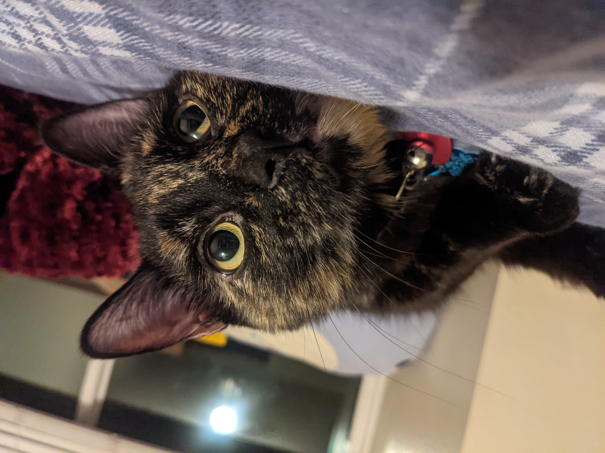
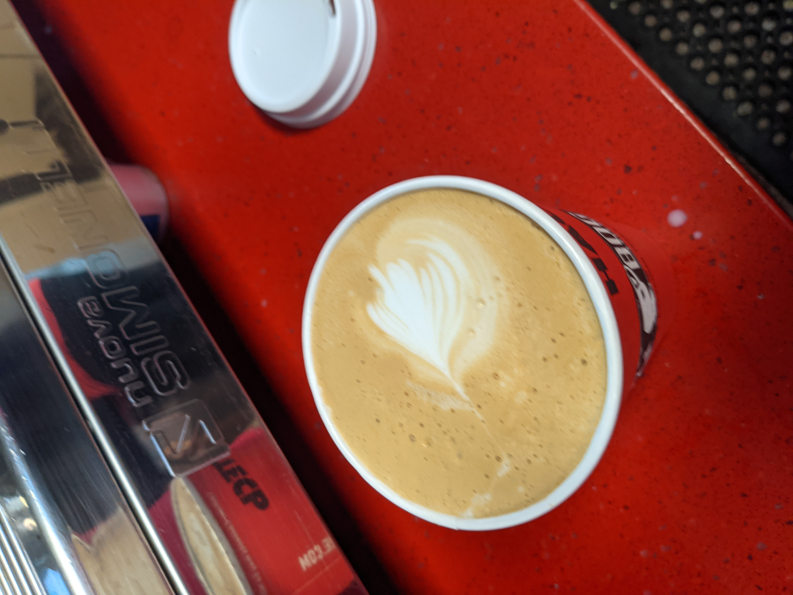
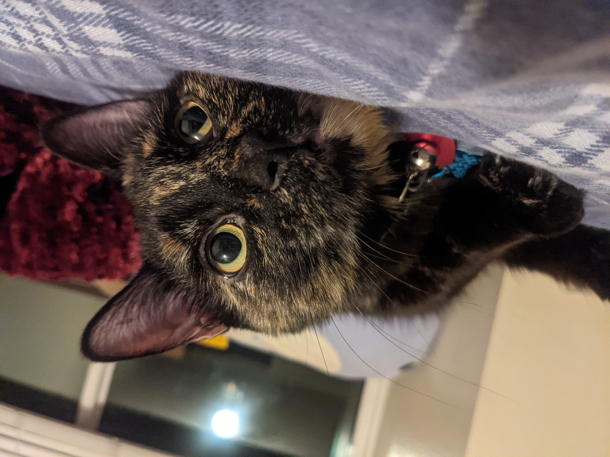
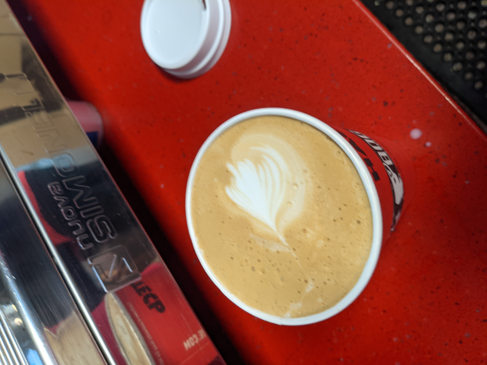

Hobbies
 



My biggest hobby and passion is my writing. I am currently working on two books. I have hit
a bit of a block on one of them, but hope to have the other done by the end of November.
I love animals and have seven pets in total. They are Nutmeg (who is featured here), Goose,
Tapioca, Lemon Zest, Blueberry, Crookshanks, and Appa.
For the two years I have been working, most of that time was spent as a barista. Besides
fueling my caffiene addiction, I have also discovered a passion for tea and coffee.